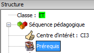
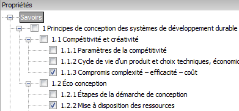

Démarche
d'élaboration d'une fiche de séquenceDémarche
d'élaboration d'une fiche de séquence
Démarche
d'élaboration d'une fiche de séquenceDémarche
d'élaboration d'une fiche de séquenceConfigurer la classe Il est impératif de configurer la classe avant de définir les autres paramètres de la séquence : ce n'est plus possible dès lors que certain éléments propres au type de classe ont été choisis (CI, Prérequis, ...)
Dans l'arborescence, cliquer sur "séquence pédagogique"

Dans propriétés saisir :
Dans l'arborescence, cliquer sur "Centres d'intérêt".

Dans propriétés, sélectionner les centres d'intérêt correspondant à la séquence. La sélection peut se faire soit depuis la cible, soit avec les cases à cocher.
Il n'est possible de sélectionner que 2 CI adjacents dans la cible MEI.

résultat sur la fiche

Dans l'arborescence, sélectionner "prérequis".

Dans propriétés, sélectionner le ou les prérequis.

résultat sur la fiche 
Dans l'arborescence, cliquer avec le bouton droit de la souris sur "prérequis" puis cliquer sur "ajouter une séquence".

Dans "propriétés" sélectionner le fichier .seq correspondant à la fiche de séquence pré-requise.
résultat sur la fiche